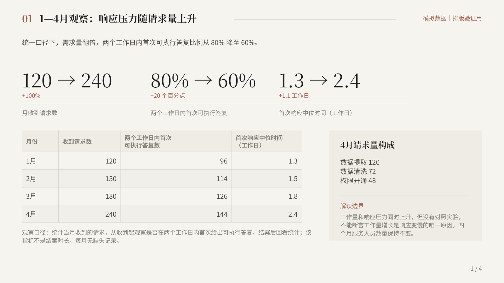

<!doctype html><html lang="zh-CN"><meta charset="utf-8"><meta name="viewport" content="width=device-width,initial-scale=1"><title>中性 Skin＋杂志风 · 同稿预览</title><style>*{box-sizing:border-box}body{margin:0;background:#e9e7e0;color:#201f1d;font:16px 'Microsoft YaHei',sans-serif}header{padding:18px 28px;background:#f5f4ef}h1{margin:0 0 8px;font-size:23px}p{margin:4px 0;color:#67645c}nav{display:flex;gap:10px;padding:14px 28px;align-items:center;flex-wrap:wrap}button{font:inherit;padding:7px 18px;border:1px solid #bcb8ad;background:#f5f4ef;cursor:pointer}button.active{background:#4d4a42;color:white}a{color:#814b40}main{max-width:1440px;margin:auto;padding:0 20px 20px}img{display:block;width:100%;height:auto;box-shadow:0 2px 10px #0001}.link{margin-left:auto}</style><header><h1>中性 Skin＋杂志风</h1><p>同一份模拟稿件 · 4 张正文页 · 使用项目现有配置</p></header><nav id="nav"></nav><main></main><script>let current=1;function show(p){current=p;document.getElementById('slide').src=`rendered-final/slide-${p}.png`;document.getElementById('slide').alt=`正文第${p}页`;document.getElementById('nav').innerHTML=[1,2,3,4].map(n=>`<button class="${n===p?'active':''}" onclick="show(${n})">第 ${n} 页</button>`).join('')+'<a class="link" href="deck.pptx">下载可编辑 PPTX</a>'}show(1);document.addEventListener('keydown',e=>{if(e.key==='ArrowRight')show(Math.min(4,current+1));if(e.key==='ArrowLeft')show(Math.max(1,current-1))});</script></html>
